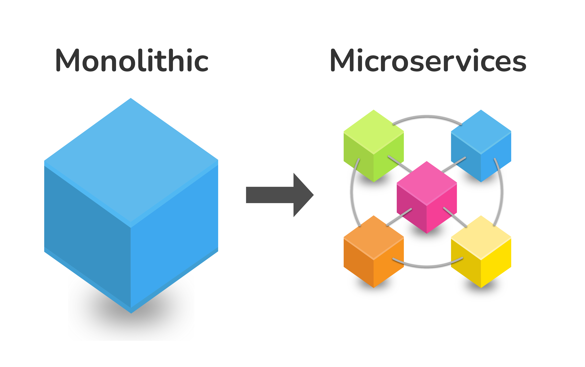
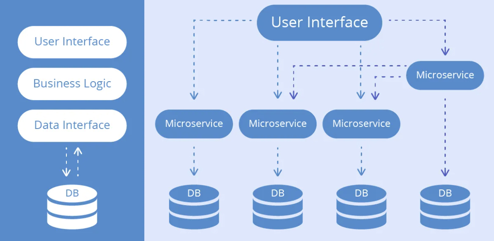

Микросервисная архитектура (или просто «микросервисы») — это подход к созданию приложения в виде набора независимо развертываемых сервисов, которые являются децентрализованными и разрабатываются независимо друг от друга. Эти сервисы слабо связаны, независимо развертываются и легко обслуживаются. Монолитное приложение создается как единое и неделимое целое, тогда как в микросервисной архитектуре его разбивают на множество независимых модулей, каждый из которых вносит свой вклад в общее дело. Микросервисы неразрывно связаны с DevOps, поскольку лежат в основе методики непрерывной поставки, благодаря которой команды могут быстро адаптироваться к требованиям пользователей.

Это веб-сервис, отвечающий за один элемент логики в определенной предметной области. Приложение создают как комбинацию микросервисов, каждый из которых предоставляет функциональные возможности в своей предметной области. Микросервисы взаимодействуют друг с другом через API-интерфейсы, такие как REST или gRPC, но не обладают информацией о внутреннем устройстве других сервисов.
При использовании микросервисной архитектуры разработчики могут разделиться на небольшие команды, которые будут работать над разными сервисами, использовать разные стеки и независимо выполнять развертывания. Например, в основе Jira лежит множество микросервисов, каждый из которых предоставляет определенные возможности: поиск задач, просмотр сведений о задачах, комментирование, изменение состояния задач и многое другое.
Характеристики микросервисной архитектуры
У микросервисной архитектуры нет формального определения, но есть некоторые общие особенности (или характеристики), о которых важно знать.
Автономные компоненты
Основным структурным элементом микросервисной архитектуры является компонент. Это может быть пакет ПО, веб-сервис, ресурс, приложение или модуль, содержащий несколько взаимосвязанных функций. Проще говоря, как объяснил Мартин Фаулер, «программные компоненты — это вещи, которые можно заменять и обновлять независимо друг от друга».

Компоненты используются совместно для качественного обслуживания клиентов или поставки ценных продуктов. Наиболее распространенными компонентами являются сервисы и библиотеки, однако в качестве компонентов могут также выступать инструменты командной строки, мобильные приложения, интерфейсные модули, конвейеры данных, модели машинного обучения и многие другие концепты, применимые в микросервисной архитектуре.
Четкие и понятные интерфейсы
После создания отдельных компонентов потребуется значительный объем логики, чтобы обеспечить их взаимодействие в рамках выбранного механизма (например, RPC, REST через HTTP или система, управляемая событиями). В микросервисной архитектуре в качестве таких механизмов могут использоваться синхронные или асинхронные методы либо комбинация таких методов.
Важнее всего, чтобы у каждого микросервиса был четкий и понятный контракт, в котором описан способ его использования клиентом. Обычно для этих целей используют API-интерфейс, который публикуется вместе с сервисом.
Кто разработал, тот и поддерживает
Принцип DevOps «кто разработал, тот и поддерживает» подчеркивает, что микросервисную архитектуру можно внедрить только при наличии продуманной структуры команд. DevOps изменяет мотивацию всех функциональных ролей — разработчиков, специалистов по контролю качества, а также инженеров по релизам и эксплуатации — и делает их частью единой команды, в которой все участники стремятся создавать высококачественное ПО. Методики DevOps, такие как CI/CD, автоматизированное тестирование и флажки возможностей, ускоряют развертывание и помогают поддерживать стабильность и безопасность системы. Кроме того, каждая команда может создавать и развертывать свои микросервисы, не мешая работе других команд.
Благодаря развитию облачных технологий стало проще создавать и развертывать микросервисы, а также работать с ними. Команды могут облегчить работу с помощью таких методов автоматизации инфраструктуры, как непрерывная интеграция, непрерывная поставка и автоматизированное тестирование.
Сравнение сервис-ориентированной и микросервисной архитектуры
Сервис-ориентированная архитектура (SOA) и микросервисная архитектура — это две разновидности архитектуры веб-сервисов. Подобно микросервисной архитектуре, SOA состоит из многократно используемых специализированных компонентов, которые работают независимо друг от друга. Разница между этими двумя типами архитектур заключается в формальной классификации типов сервисов.
В рамках SOA выделяют четыре основных типа сервисов:
*Business
*Enterprise
*Приложение
*Инфраструктурные сервисы
От типа сервиса зависит его сфера ответственности в конкретной предметной области. Для сравнения: в архитектуре микросервисов есть лишь два типа сервисов — функциональные и инфраструктурные.
В обеих архитектурах используется один и тот же набор стандартов, действующих на разных уровнях компании. Микросервисная архитектура возникла благодаря успеху модели SOA, поэтому можно сказать, что такая архитектура является подмножеством данной модели. В ней основное внимание уделяется независимой работе каждого сервиса.